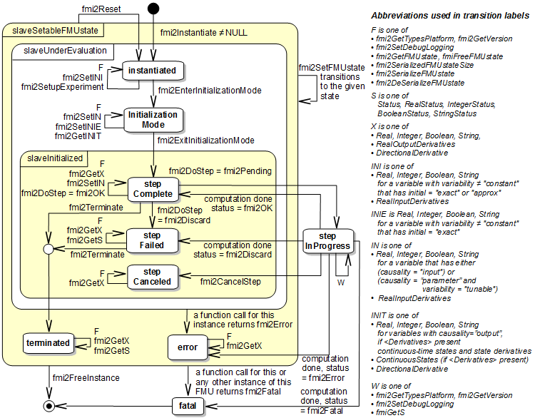

FMI Application Programming Interface
This section contains the interface description to access the in/output data and status information of a co-simulation slave from a C program.
Transfer of Input / Output Values and Parameters
Input and output variables and variables are transferred via the
fmi2GetXXX and fmi2SetXXX functions, defined in section 2.1.7.
In order to enable the slave to interpolate the continuous real inputs
between communication steps, the derivatives of the inputs with respect
to time can be provided.
Also, higher derivatives can be set to allow higher order interpolation.
Whether a slave is able to interpolate and
therefore needs this information is provided by the capability attribute canInterpolateInputs.
fmi2Status fmi2SetRealInputDerivatives(fmi2Component c,
const fmi2ValueReference vr[], size_t nvr,
const fmi2Integer order[],
const fmi2Real value[]);Sets the n-th time derivative of real input variables.
Argument "vr" is a vector of value references that define the variables whose derivatives shall be set.
The array "order" contains the orders of the respective derivative (1 means the first derivative,
0 is not allowed).
Argument "value" is a vector with the values of the derivatives.
"nvr" is the dimension of the vectors.
Different input variables may have different interpolation order.
Restrictions on using the function are the same as for the fmi2SetReal function.
Inputs and their derivatives are set with respect to the beginning of a communication time step.
To allow interpolation/approximation of the real output variables between communication steps (if they are used as inputs for other slaves), the derivatives of the outputs with respect to time can be read.
Whether the slave is able to provide the derivatives of outputs is given by the unsigned integer capability flag MaxOutputDerivativeOrder.
It delivers the maximum order of the output derivative.
If the actual order is lower (because the order of integration algorithm is low),
the retrieved value is 0.
[Example: If the internal polynomial is of order 1 and the master inquires the second derivative of an output, the slave will return zero.]
The derivatives can be retrieved by:
fmi2Status fmi2GetRealOutputDerivatives (fmi2Component c, +
const fmi2ValueReference vr[], size_t nvr, +
const fmi2Integer order[], +
fmi2Real value[]);Retrieves the n-th derivative of output values.
Argument "vr" is a vector of "nvr" value references that define the variables whose derivatives shall be retrieved.
The array order contains the order of the respective derivative (1 means the first derivative,
0 is not allowed).
Argument "value" is a vector with the actual values of the derivatives.
Restrictions on using the function are the same as for the fmi2GetReal function.
The returned outputs correspond to the current slave time.
E.g. after a successful fmi2DoStep(..) the returned values are related to the end of the communication time step.
This standard supports polynomial interpolation and extrapolation as well as more sophisticated signal extrapolation schemes like rational extrapolation.
Computation
The computation of time steps is controlled by the following function.
fmi2Status fmi2DoStep(fmi2Component c,
fmi2Real currentCommunicationPoint,
fmi2Real communicationStepSize,
fmi2Boolean noSetFMUStatePriorToCurrentPoint);The computation of a time step is started.
Argument currentCommunicationPoint is the current communication point of the master (\(tc_i\)) and argument communicationStepSize is the communication step size (\(hc_i\)).
The latter must be \(> 0.0\).
The slave must integrate until time instant \(tc_{i+1} = tc_i + hc_i\).
[The calling environment defines the communication points and fmi2DoStep must
synchronize to these points by always integrating exactly to \(tc_i + hc_i\).
It is up to fmi2DoStep how to achieve this.]
At the first call to fmiDoStep after fmi2ExitInitializationMode was called
currentCommunicationPoint must be equal to startTime as set with fmi2SetupExperiment.
[Formally, argument currentCommunicationPoint is not needed.
It is present in order to handle a mismatch between the master and the FMU state of the slave: The currentCommunicationPoint and the FMU state of the slaves defined by former fmi2DoStep or
fmi2SetFMUState calls have to be consistent with respect to each other.
For example, if the slave does not use the update formula for the independent variable as required above, \(tc_{i+1} = tc_i + hc_i\) (using argument \(tc_i\) = currentCommunicationPoint of fmi2DoStep) but uses internally an own update formula,
such as \(tc_{s,i+1} = tc_{s,i} + hc_{s,i}\) then the slave could use as time increment \(\text{hc}_{s,i} := (tc_i - tc_{s,i}) + hc_i\) (instead of \(\text{hc}_{s,i} := hc_i\) ) to avoid a mismatch between the master time \(tc_{i+1}\) and the slave internal time \(tc_{s,i+1}\) for large i.]
Argument noSetFMUStatePriorToCurrentPoint is fmi2True if fmi2SetFMUState will no longer be called for time instants prior to currentCommunicationPoint in this simulation run [the slave can use this flag to flush a result buffer].
The function returns:
fmi2OK - if the communication step was computed successfully until its end.
fmi2Discard - if the slave computed successfully only a subinterval of the communication step.
The master can call the appropriate fmi2GetXXXStatus functions to get further information.
If possible, the master should retry the simulation with a shorter communication step size.
[Redoing a step is only possible if the FMU state has been recorded at the beginning of the current (failed) step with fmi2GetFMUState.
Redoing a step is performed by calling fmi2SetFMUState and afterwards calling fmi2DoStep with the new communicationStepSize.
Note that it is not possible to change currentCommunicationPoint in such a call.]
fmi2Error - the communication step could not be carried out at all.
The master can try to repeat the step with other input values and/or a different communication step size in the same way as described in the fmi2Discard case above.
fmi2Fatal - if an error occurred which corrupted the FMU irreparably.
[The master should stop the simulation run immediatlely.] See section 2.1.3 for details.
fmi2Pending - this status is returned if the slave executes the function asynchronously.
That means the slave starts the computation but returns immediately.
The master has to call fmi2GetStatus(…,fmi2DoStep,…) to find out if the slave is done.
An alternative is to wait until the callback function fmi2StepFinished is called by the slave.
fmi2CancelStep can be called to cancel the current computation.
It is not allowed to call any other function during a pending fmi2DoStep.
fmi2Status fmi2CancelStep(fmi2Component c);Can be called if fmi2DoStep returned fmi2Pending in order to stop the current asynchronous execution.
The master calls this function if, for example, the co-simulation run is stopped by the user or one of the slaves.
Afterwards only calls to fmi2Reset, fmi2FreeInstance, or fmi2SetFMUstate are valid to exit the step Canceled state.
Refer to section 4.2.4 for all other valid functions in this state.
It depends on the capabilities of the slave which parameter constellations and calling sequences are allowed (see 4.3.1)
Retrieving Status Information from the Slave
Status information is retrieved from the slave by the following functions:
fmi2Status fmi2GetStatus (fmi2Component c, const fmi2StatusKind s,
fmi2Status* value);
fmi2Status fmi2GetRealStatus (fmi2Component c, const fmi2StatusKind s,
fmi2Real* value);
fmi2Status fmi2GetIntegerStatus(fmi2Component c, const fmi2StatusKind s,
fmi2Integer* value);
fmi2Status fmi2GetBooleanStatus(fmi2Component c, const fmi2StatusKind s,
fmi2Boolean* value);
fmi2Status fmi2GetStringStatus (fmi2Component c, const fmi2StatusKind s,
fmi2String* value);Informs the master about the actual status of the simulation run.
Which status information is to be returned is specified by the argument fmi2StatusKind.
It depends on the capabilities of the slave which status information can be given by the slave (see 4.3.1).
If a status is required which cannot be retrieved by the slave it returns fmi2Discard.
typedef enum {fmi2DoStepStatus,
fmi2PendingStatus,
fmi2LastSuccessfulTime,
fmi2Terminated
} fmi2StatusKind;Defines which status is inquired.
The following status information can be retrieved from a slave:
| Status | Type of retrieved value | Description |
|---|---|---|
|
|
Can be called when the |
|
|
Can be called when the |
|
|
Returns the end time of the last successfully completed communication step.
Can be called after |
|
|
Returns |
State Machine of Calling Sequence from Master to Slave
The following state machine defines the supported calling sequences.

Each state of the state machine corresponds to a certain phase of a simulation as follows:
instantiated:
In this state,
start and guess values of variables that have initial = "exact" or "approx" and variability ≠ "constant" can be set,
this does not include inputs as they do not have an initial attribute but one can set input derivatives with the function fmi2SetRealInputDerivatives.
Initialization Mode:
In this state, equations are active to determine all outputs (and optionally other variables exposed by the exporting tool).
The variables that can be retrieved by fmi2GetXXX calls are (1) defined in the XML file
under <ModelStructure><InitialUnknowns>, and (2) variables with causality = "output".
Variables with initial = "exact" and variability ≠ "constant",
as well as variables with causality = "input" can be set.
slaveInitialized:
In this state, the slave is initialized and the co-simulation computation is performed. The calculation until the next communication point is performed with function fmi2DoStep. Depending on the return value, the slave is in a different state (step Complete, step Failed, step Canceled).
terminated:
In this state, the solution at the final time of the simulation can be retrieved.
Note that in Initialization Mode input variables can be set with fmi2SetXXX and output variables can be retrieved
with fmi2GetXXX interchangeably according to the model structure defined
under element <ModelStructure><InitialUnknowns> in the XML file.
[For example, if one output y1 depends on two inputs u1, u2,
then these two inputs must be set, before y1 can be retrieved.
If additionally an output y2 depends on an input u3, then u3 can be set and y2 can be retrieved afterwards.
As a result, artificial or "real" algebraic loops over connected FMUs in
Initialization Mode can be handled by using appropriate numerical algorithms.]
There is the additional restriction in slaveInitialized state that it is not allowed to call fmi2GetXXX functions after fmi2SetXXX functions without an fmi2DoStep call in between.
_[The reason is to avoid different interpretations of the caching, since contrary to FMI for Model Exchange, fmi2DoStep will perform the actual calculation instead of fmi2GetXXX, and therefore, dummy algebraic loops at communication points cannot be handeled by an appropriate sequence of fmi2GetXXX and, fmi2SetXXX calls as for ModelExchange.
Examples:_
| Correct calling sequence | Wrong calling sequence |
|---|---|
fmi2SetXXX on inputs |
fmi2SetXXX on inputs |
]
The allowed function calls in the respective states are summarized in the following table (functions marked in "yellow" are only available for "Co-Simulation", the other functions are available both for "Model Exchange" and "Co-Simulation"):
Function |
FMI 2.0 for Co-Simulation |
|||||||||
start, end |
instantiated |
Initialization Mode |
stepComplete |
stepInProgress |
stepFailed |
stepCanceled |
terminated |
error |
fatal |
|
fmi2GetTypesPlatform |
x |
x |
x |
x |
x |
x |
x |
x |
x |
|
fmi2GetVersion |
x |
x |
x |
x |
x |
x |
x |
x |
x |
|
fmi2SetDebugLogging |
x |
x |
x |
x |
x |
x |
x |
x |
||
fmi2Instantiate |
x |
|||||||||
fmi2FreeInstance |
x |
x |
x |
x |
x |
x |
x |
|||
fmi2SetupExperiment |
x |
|||||||||
fmi2EnterInitializationMode |
x |
|||||||||
fmi2ExitInitializationMode |
x |
|||||||||
fmi2Terminate |
x |
x |
||||||||
fmi2Reset |
x |
x |
x |
x |
x |
x |
x |
|||
fmi2GetReal |
2 |
x |
8 |
7 |
x |
7 |
||||
fmi2GetInteger |
2 |
x |
8 |
7 |
x |
7 |
||||
fmi2GetBoolean |
2 |
x |
8 |
7 |
x |
7 |
||||
fmi2GetString |
2 |
x |
8 |
7 |
x |
7 |
||||
fmi2SetReal |
1 |
3 |
6 |
|||||||
fmi2SetInteger |
1 |
3 |
6 |
|||||||
fmi2SetBoolean |
1 |
3 |
6 |
|||||||
fmi2SetString |
1 |
3 |
6 |
|||||||
fmi2GetFMUstate |
x |
x |
x |
8 |
7 |
x |
7 |
|||
fmi2SetFMUstate |
x |
x |
x |
x |
x |
x |
x |
|||
fmi2FreeFMUstate |
x |
x |
x |
x |
x |
x |
x |
|||
fmi2SerializedFMUstateSize |
x |
x |
x |
x |
x |
x |
x |
|||
fmi2SerializeFMUstate |
x |
x |
x |
x |
x |
x |
x |
|||
fmi2DeSerializeFMUstate |
x |
x |
x |
x |
x |
x |
x |
|||
fmi2GetDirectionalDerivative |
x |
x |
8 |
7 |
x |
7 |
||||
fmi2SetRealInputDerivatives |
x |
x |
x |
|||||||
fmi2GetRealOutputDerivatives |
x |
8 |
x |
x |
7 |
|||||
fmi2DoStep |
x |
|||||||||
fmi2CancelStep |
x |
|||||||||
fmi2GetStatus |
x |
x |
x |
x |
||||||
fmi2GetRealStatus |
x |
x |
x |
x |
||||||
fmi2GetIntegerStatus |
x |
x |
x |
x |
||||||
fmi2GetBooleanStatus |
x |
x |
x |
x |
||||||
fmi2GetStringStatus |
x |
x |
x |
x |
||||||
x means: call is allowed in the corresponding state
number means: call is allowed if the indicated condition holds:
1 for a variable with variability ≠ "constant" that has initial = "exact" or "approx"
2 for a variable with causality = "output" or continuous-time states or state derivatives
(if element <Derivatives> is present)
3 for a variable with variability ≠ "constant" that has initial = "exact",
or causality = "input"
6 for a variable with causality = "input" or (causality = "parameter" and variability = "tunable")
7 always, but retrieved values are usable for debugging only
8 always, but if status is other than fmi2Terminated,
retrieved values are useable for debugging only
Pseudocode Example
In the following example, the usage of the FMI functions is sketched in order to clarify the typical calling sequence of the functions in a simulation environment. The example is given in a mix of pseudocode and C, in order to keep it small and understandable. We consider two slaves, where both have one continuous real input and one continuous real output which are connected in the following way:

We assume no algebraic dependency between input and output of each slave. The code demonstrates the simplest master algorithm as shown in section 4.1:
-
Constant communication step size.
-
No repeating of communication steps.
-
The slaves do not support asynchronous execution of
fmi2DoStep.
The error handling is implemented in a very rudimentary way.
//////////////////////////
//Initialization sub-phase
//Set callback functions,
fmi2CallbackFunctions cbf;
cbf.logger = loggerFunction; //logger function
cbf.allocateMemory = calloc;
cbf.freeMemory = free;
cbf.stepFinished = NULL; //synchronous execution
cbf.componentEnvironment = NULL;
//Instantiate both slaves
fmi2Component s1 = s1_fmi2Instantiate("Tool1" , fmi2CoSimulation, GUID1, "",
fmi2False, fmi2False, &cbf, fmi2True);
fmi2Component s2 = s2_fmi2Instantiate("Tool2" , fmi2CoSimulation, GUID2, "",
fmi2False, fmi2False, &cbf, fmi2True);
if ((s1 == NULL) || (s2 == NULL))
return FAILURE;
// Start and stop time
startTime = 0;
stopTime = 10;
//communication step size
h = 0.01;
// set all variable start values (of "ScalarVariable / <type> / start")
s1_fmi2SetReal/Integer/Boolean/String(s1, ...);
s2_fmi2SetReal/Integer/Boolean/String(s2, ...);
//Initialize slaves
s1_fmi2SetupExperiment(s1, fmi2False, 0.0, startTime, fmi2True, stopTime);
s2_fmi2SetupExperiment(s1, fmi2False, 0.0, startTime, fmi2True, stopTime);
s1_fmi2EnterInitializationMode(s1);
s2_fmi2EnterInitializationMode(s2);
// set the input values at time = startTime
s1_fmi2SetReal/Integer/Boolean/String(s1, ...);
s2_fmi2SetReal/Integer/Boolean/String(s2, ...);
s1_fmi2ExitInitializationMode(s1);
s2_fmi2ExitInitializationMode(s2);
//////////////////////////
//Simulation sub-phase
tc = startTime; //Current master time
while ((tc < stopTime) && (status == fmi2OK))
{
//retrieve outputs
s1_fmi2GetReal(s1, ..., 1, &y1);
s2_fmi2GetReal(s2, ..., 1, &y2);
//set inputs
s1_fmi2SetReal(s1, ..., 1, &y2);
s2_fmi2SetReal(s2, ..., 1, &y1);
//call slave s1 and check status
status = s1_fmi2DoStep(s1, tc, h, fmi2True);
switch (status) {
case fmi2Discard:
fmi2GetBooleanStatus(s1, fmi2Terminated, &boolVal);
if (boolVal == fmi2True)
printf("Slave s1 wants to terminate simulation.");
case fmi2Error:
case fmi2Fatal:
terminateSimulation = true;
break;
}
if (terminateSimulation)
break;
//call slave s2 and check status as above
status = s2_fmi2DoStep(s2, tc, h, fmi2True);
...
//increment master time
tc += h;
}
//////////////////////////
//Shutdown sub-phase
if ((status != fmi2Error) && (status != fmi2Fatal))
{
s1_fmi2Terminate(s1);
s2_fmi2Terminate(s2);
}
if (status != fmi2Fatal)
{
s1_fmi2FreeInstance(s1);
s2_fmi2FreeInstance(s2);
}